Lab 7: Kalman Filter
ECE4160 Fast Robotics — Spring 2026
Connor Lynaugh
Overview
The objective of this lab was to implement a Kalman Filter to improve the robot’s ability to estimate its distance from a wall using noisy and low-frequency ToF measurements. In Lab 5, linear extrapolation was used to estimate distance between sensor readings, but this approach struggled at higher speeds and introduced significant error during rapid changes in motion. The Kalman Filter addresses this by combining a physics-based model with sensor measurements to produce a more accurate and continuous estimate of both position and velocity.
Estimate Drag and Momentum
To construct the Kalman Filter, the robot’s motion was modeled using Newton’s second law with linear drag.
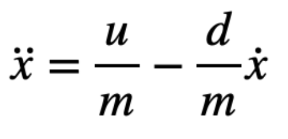
Defining the state vector as position and velocity: x = [x, ẋ]T
The system can be written in state-space form as follows:
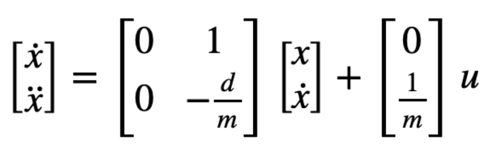
To determine the parameters d for drag and m for mass, a step response was performed by driving the robot toward a wall at a constant motor input (128). ToF distance measurements were recorded and converted into velocity by taking finite differences over sensor readings. From this data, the steady-state velocity and approximate rise time were extracted using python scripts. Several motor inputs were tested from 50% 75% 90% and 100%. Nearly all of them refused to settle close to a steady state, except 50% at the furthest distance and no braking. Thus, I chose to use this step input (128) and data was exported using a typical bluetooth notification handler.
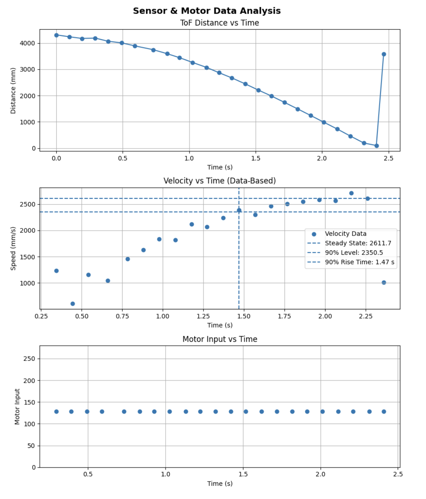
In order to predict the rise time and steady state, the first few and last data points were neglected during the exponential fit to prevent biasing the dataset while the ToF sensor has either yet to reliably detect the wall or become in contact with the wall. This exponential fit produced the following results.
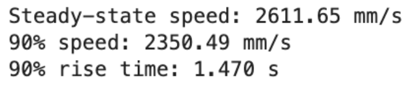
With these values, drag was estimated from the ratio of input to steady-state velocity, and mass was computed using the rise-time relationship derived from the first-order system approximation.
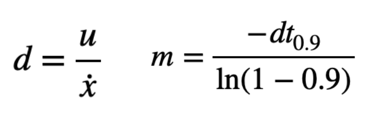
Values of d = 0.383 and m = 0.245 were thus derived.
Initialize KF (Python)
The continuous-time system was then discretized for implementation in the Kalman Filter:
A = np.array([[0, 1],[0, -d/m]])
B = np.array([[0],[1/m]])
C = np.array([[-1, 0]])
Ad = I + dt * A
Bd = dt * B
Since the ToF sensor measures distance decreasing toward the wall. The state vector was initialized using the first ToF measurement with zero initial velocity:
x = np.array([[dist[0]], [0]])
The Kalman Filter also requires defining process noise and measurement noise covariance matrices, which determine how much the filter trusts the model versus the sensor. In this implementation, the process and measurement noise matrix was initialized as:
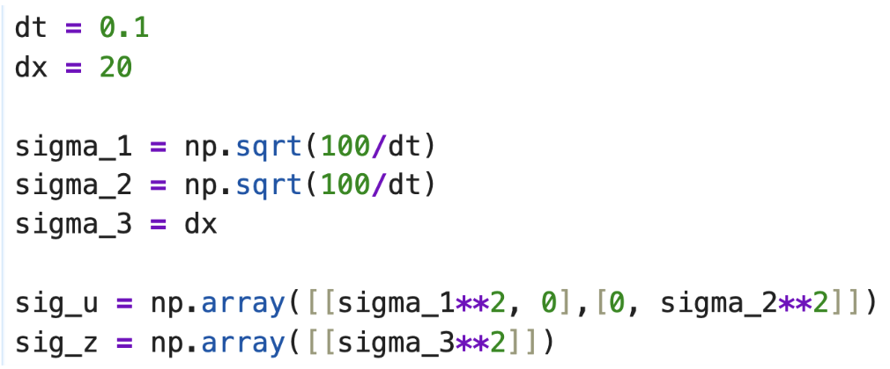
These values were derived from initial assumptions about the sampling rate for the process noise and the ToF noise (+/-20mm).
The same script as previous labs was run to get initial beliefs about dt, in this case 0.1s or 10Hz.
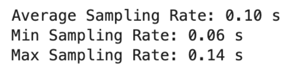
With choices between mm and m metrics, I was initially unsure if my covariance matrices were sized properly.
Implement and Test Kalman Filter in Jupyter
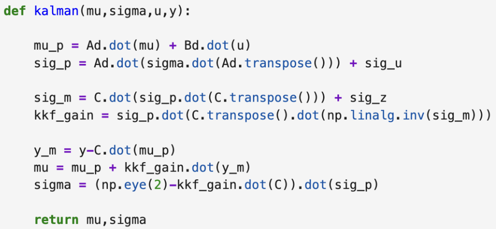
The Kalman Filter was first implemented and tested in Python using recorded data from my step response. The simulation demonstrated that the filter successfully smoothed noisy ToF data while maintaining accurate tracking of the system’s motion. It also provided a velocity estimate, which is not directly measured by the sensor. By adjusting the covariance matrices, the balance between smoothness and responsiveness could be controlled. If the model was trusted too much, the estimate became smooth but lagged behind the true position. If the measurements were trusted too much, the estimate became noisy but highly responsive, nearly choppy.
The following plot shows Kalman Filtering at the same frequency as the ToF sensor ~10 Hz tracking well from over 4 meters away. I found no additional tuning here necessary before moving on to the physical model.
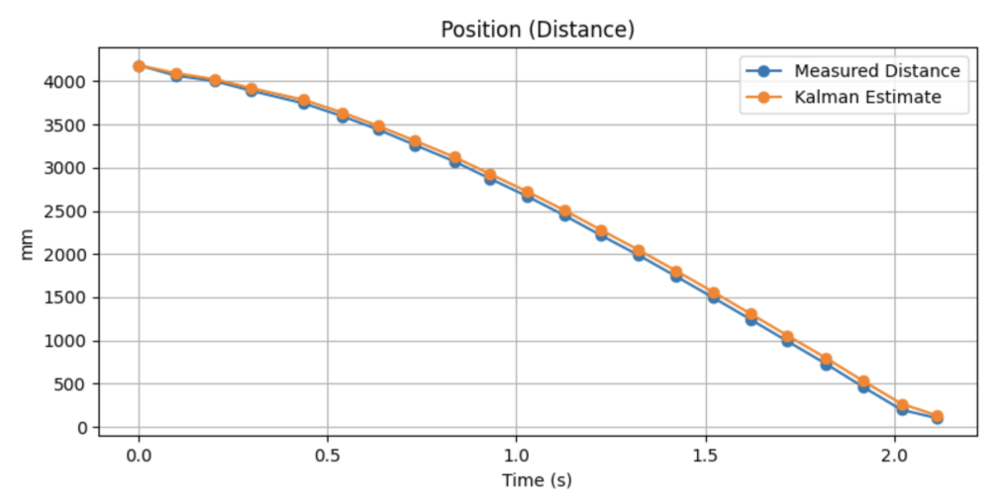
Each parameter in the Kalman Filter directly affects how the estimated curve behaves relative to the measured data. The drag and mass shape the model dynamics: if d is too high, the estimate decreases too slowly and lags above the measurements, while if it is too low, the estimate drops too quickly and can overshoot. The timestep dt affects prediction smoothness; incorrect values can cause misalignment. The process noise Σu controls how closely the estimate follows the measurements. Higher values make the estimate track the measurement data more closely, while lower values produce a smoother but more model-driven curve. The measurement noise Σz has the opposite effect. Higher values make the estimate smoother and more model-based, while lower values pull it toward the measurements. The input scaling u determines how aggressively the estimate changes between updates and must be scaled down by the step response. Poor scaling leads to consistent lag or overshoot. Finally, the initial conditions mainly affect the beginning of the plot, influencing how quickly the estimate converges to the true trajectory.
Implement the Kalman Filter on the Robot
After validating the filter in simulation, it was implemented on the Artemis Nano using the BasicLinearAlgebra library.
One critical improvement in the onboard implementation was dynamically computing the timestep dt at each iteration. This was necessary because the control loop does not run at a fixed frequency, and using a constant timestep resulted in poor predictions. The Kalman Filter was structured to perform prediction at every loop iteration and only perform a measurement update when new ToF data was available. This allowed the filter to provide high-frequency state estimates even though the sensor updates were relatively slow.
The Kalman Filter operates in two steps: a prediction step, where the state is propagated forward using the system model, and an update step, where the estimate is corrected using new ToF measurements. In this implementation, prediction occurs every loop iteration, while updates only occur when new ToF data is available.
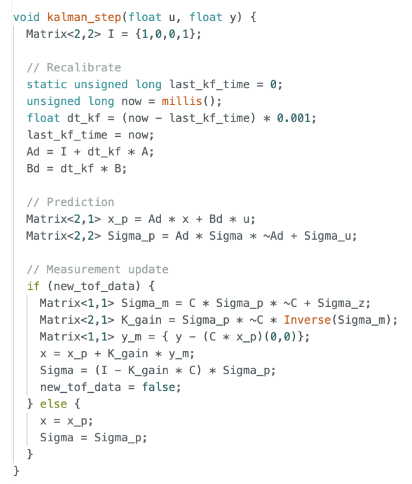
The estimated distance directly from the prediction step of the Kalman Filter replaced the linearly extrapolated distance previously used in the PID controller:
estimated_distance = x(0,0)
Quite an amount of additional calibration was required to begin to see useful results. Sigma_1 corresponding to position noise was decreased to 20mm and Sigma_2 for velocity noise was increased dramatically to 25000 mm/s to more heavily weigh the measurement model, preventing drift and decreasing more aggressively between measurements to match a better model. Sigma_3 corresponding to ToF measurement noise was only slightly lowered to 50 to scale with the process noise. Initial Sigma was adapted for these changes.
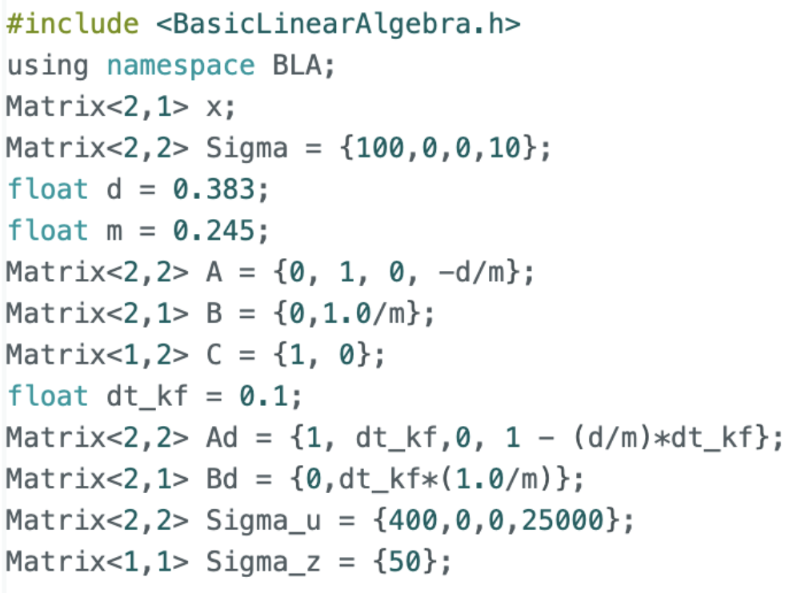
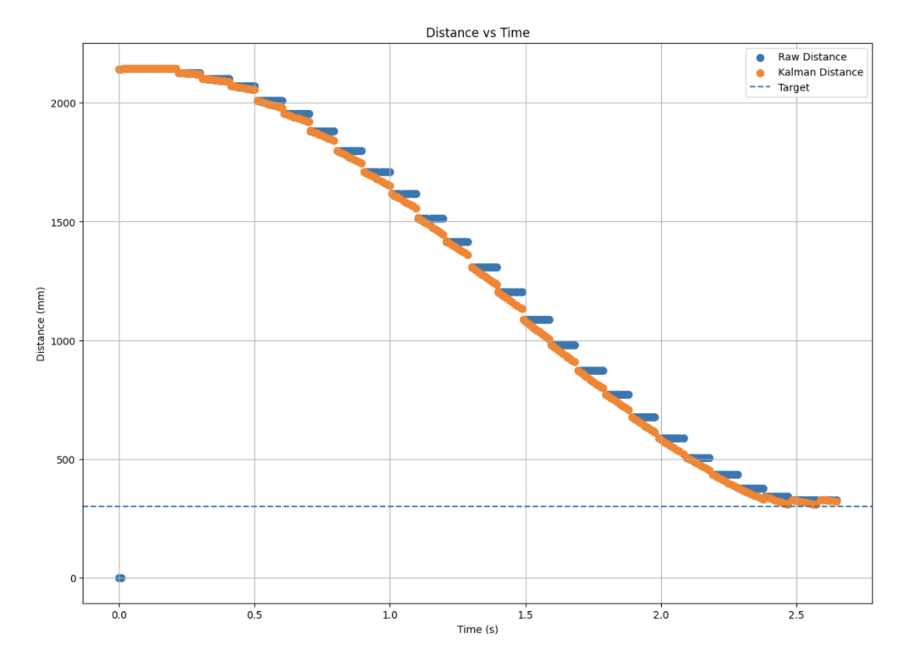
This significantly improved control performance across short, medium, and long range distances. Compared to Lab 5, the robot was able to approach the wall more smoothly and stop more accurately at the target distance. The Kalman Filter reduced noise in the derivative term and eliminated the discontinuities caused by sparse sensor updates like detecting a new human leg instead of the original wall as follows:
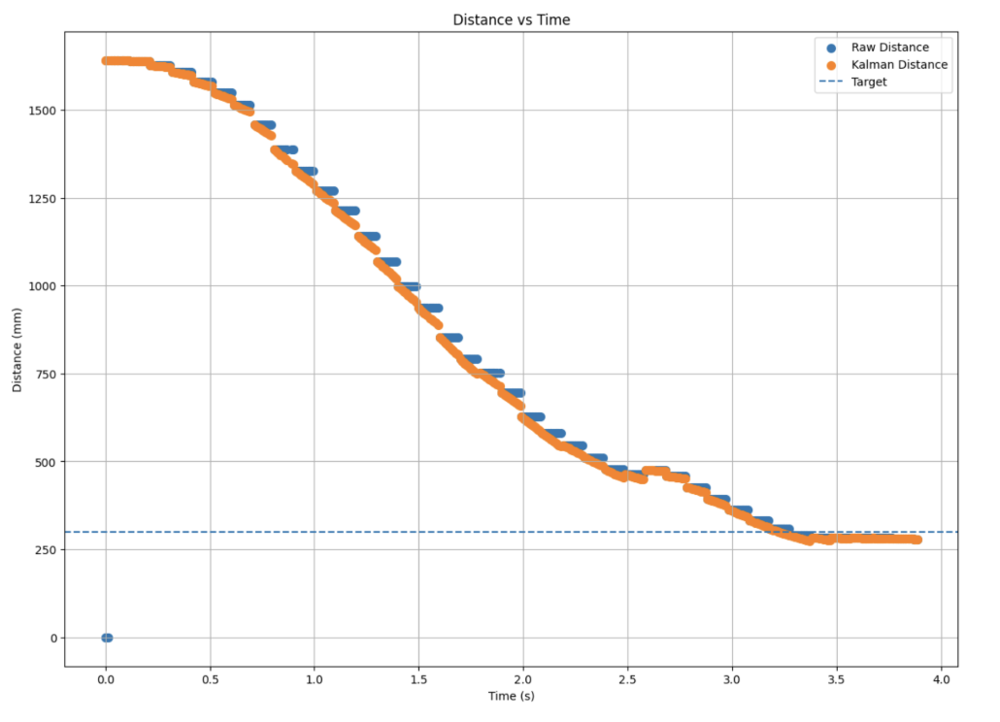
The final results showed strong agreement between the Kalman estimate and the raw ToF data, with the estimate being smoother and more continuous. With this implementation the robot's position and velocity were being accurately predicted at 10 times the rate of sensor measurements:
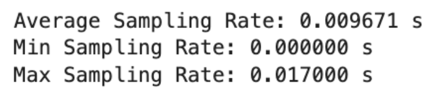
Accurate PID Tracking
Providing some additional PID tuning by increasing P and D derived the following results:

Acknowledgements
I would like to thank the teaching staff for persistent help and oversight. I would also like to credit ChatGPT for its graphing scripts as well as its conversion of my written lab report into a functional html page.